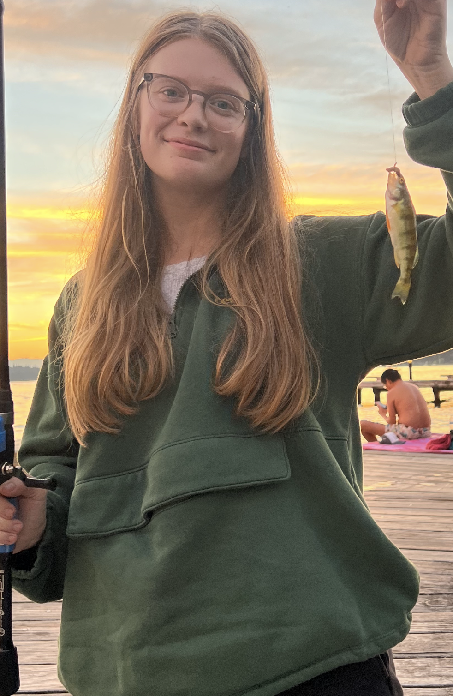

Contact Information
School email: kaitlin.holldorf@bellevuecollege.edu
About Me

Hello! My name is Kaitlin, and I’m currently residing in Bellevue while pursuing my studies at Bellevue College. I’m passionate about golf and make it a point to hit the course a few times a week to refine my skills. In my downtime, I love to indulge in creative activities like painting and crocheting. There’s nothing more relaxing than working on a new project while immersing myself in a great series—it’s my perfect way to unwind.
My Favorite
- Movie : My Neighbor Tortoro
- Song : Ivy - Frank Ocean
- Color : Green or blue